Сайт / цифровая среда женского клуба
Жемчуг — рабочий сайт клуба
Клубная страница, афиша, галерея, резидентские и партнёрские блоки, вступление в клуб и направление личного кабинета.
Разрабатываю сайты, приложения и ИИ-инструменты, которые помогают привлекать клиентов, автоматизировать процессы и развивать бизнес.
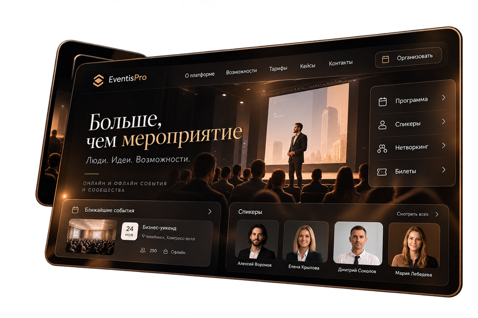
↗Платформы для мероприятийПриложения для бизнеса↗ ✧ИИ-ассистентыУмные помощники для бизнеса↗ ▣Сайты, которые продаютОт идеи до заявок↗01 / НАПРАВЛЕНИЯ РАБОТЫ
Сайты, интеллектуальные помощники и собственные цифровые платформы — под задачи и сценарии вашего бизнеса.
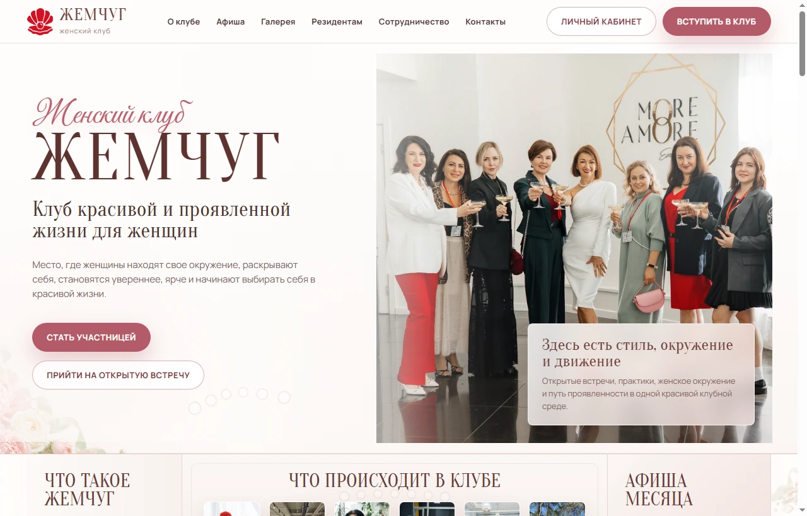
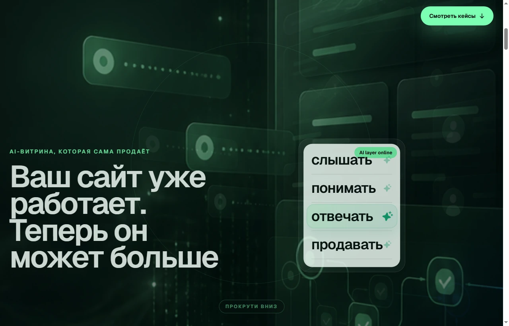
02 / КЕЙСЫ И НАПРАВЛЕНИЯ
Реальные проекты и прототипы: платформы, ИИ-инструменты, продвижение и интерактивные продукты. Выбирайте направление и открывайте примеры.
В галерее — снимки проектов и дизайн-презентации. Иллюстрации подписаны отдельно; актуальные интерфейсы смотрите по ссылкам на сайты и демоверсии.
СЛОЖНЫЕ ЦИФРОВЫЕ ПРОДУКТЫ
Решения, где важны структура, роли пользователей, контент, события и связанная цифровая экосистема.
Сайт / цифровая среда женского клуба
Клубная страница, афиша, галерея, резидентские и партнёрские блоки, вступление в клуб и направление личного кабинета.
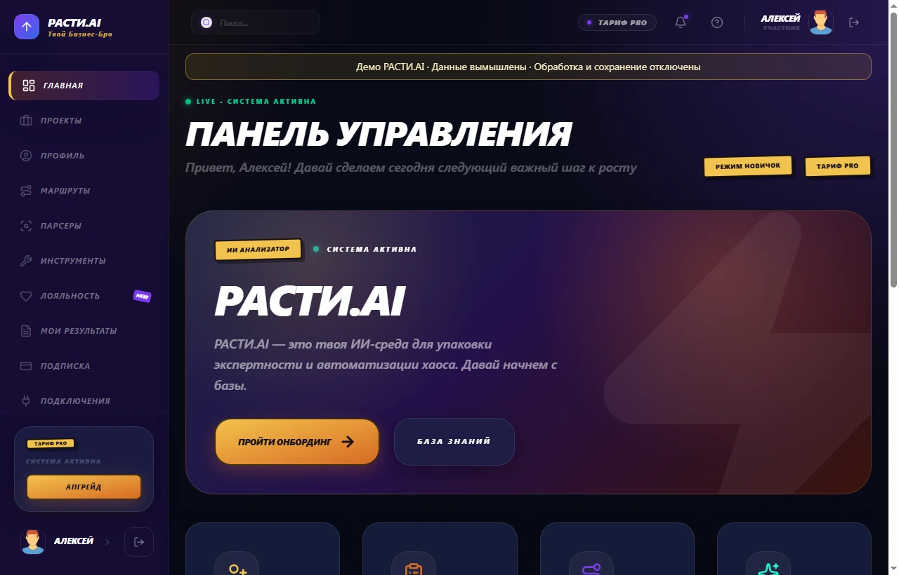
RASTI.AI Демо прототипаПрототип платформы
Прототип платформы для автоматизации бизнеса с ИИ: направление платформенной автоматизации и интеллектуальных инструментов для бизнеса.
Платформа мероприятий
Платформа для онлайн- и офлайн-событий: программа, спикеры, билеты, регистрация, личные кабинеты и аналитика организатора.
AI И АВТОМАТИЗАЦИЯ
Когда нужен не просто сервис, а управляемая система коммуникации с прозрачными отчётами и автоматизацией.
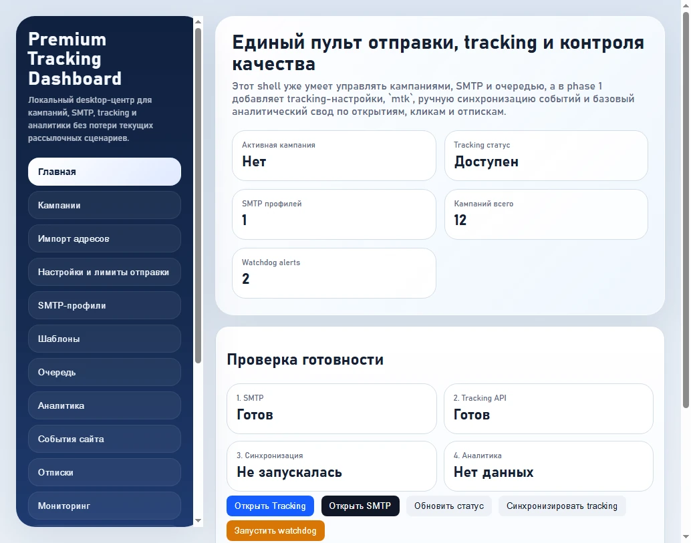
Invites Mailer Экран приложенияПриложение для автоматизации e-mail-рассылок
Импорт базы, отправка писем, tracking, регистрации и отчёты CSV/XLSX. Позволяет видеть путь от e-mail к open, click, переходу на сайт и регистрации.
SEO / GEO И АГЕНТСКОЕ ПРОДВИЖЕНИЕ
Связка сайта, контентного ИИ-агента, аналитики и понятной коммуникации с клиентом.
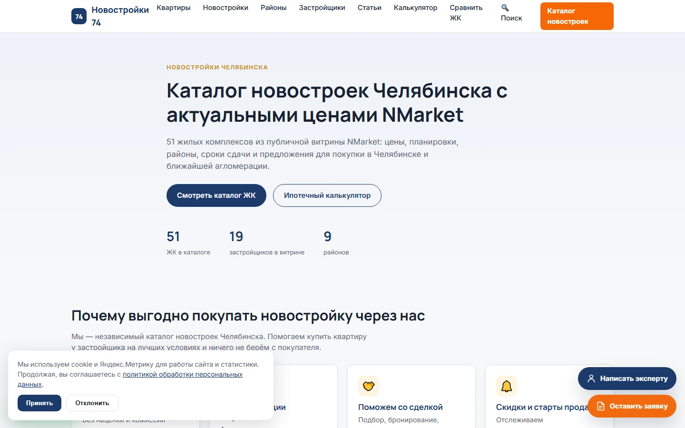
Новостройки74 Снимок сайтаСайт по новостройкам для риелтора
Сайт с ежедневной публикацией статей, которые размещает ИИ-агент для продвижения. Подтверждает направление SEO/GEO и агентского контент-маркетинга.
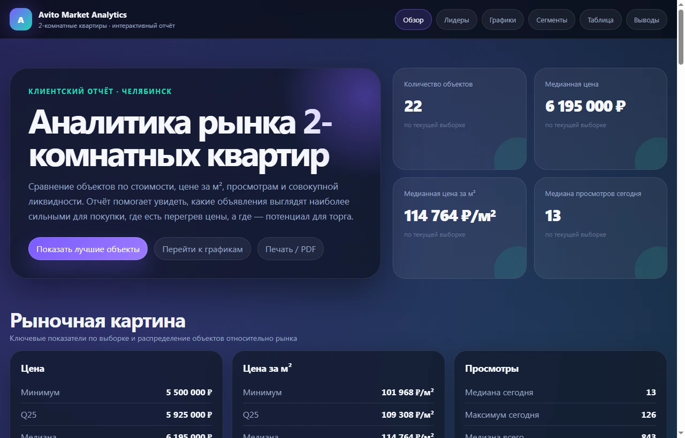
Авито-отчёты Пример аналитикиАвтоматизация для риелторов
Работа с площадкой Авито и создание автоматических отчётов для клиентов. Подтверждает автоматизацию рутины и понятную коммуникацию с клиентом.
ПРОДУКТЫ ДЛЯ ЭКСПЕРТОВ И ЛИД-МАГНИТЫ
Мини-сайты, презентации и интерактивы, которые помогают вовлекать аудиторию, объяснять продукт и усиливать коммуникацию.
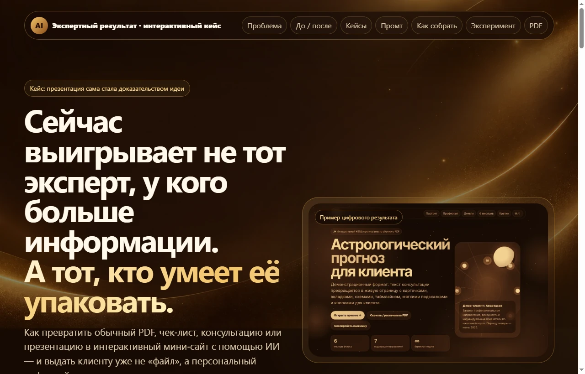
Презентация Интерактивный проектИнтерактивная презентация
Интерактивная презентация с примерами цифровых продуктов для экспертов: помогает показать продуктовую линейку и варианты решений.
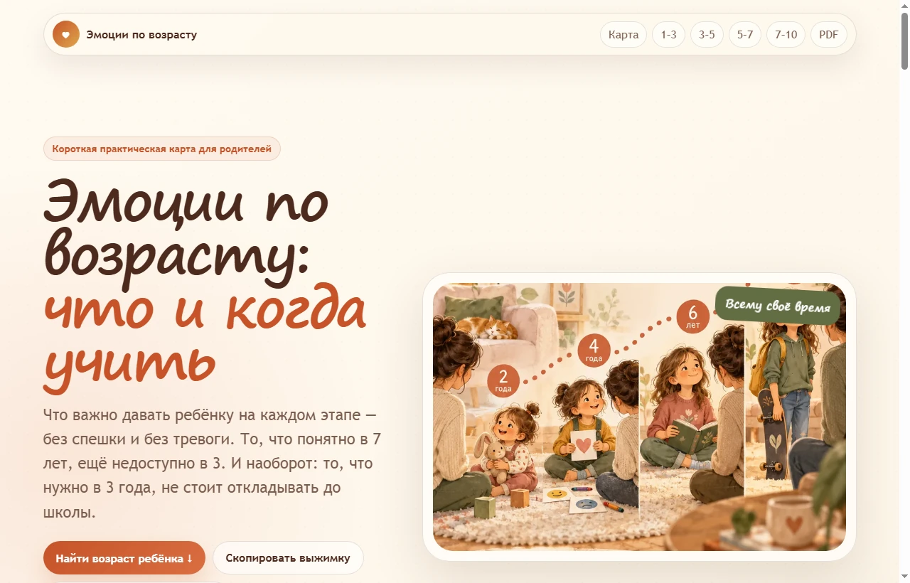
Лид-магнит Интерактивная картаЦифровой лид-магнит для психолога
Интерактивный продукт для эксперта, который помогает вовлекать аудиторию, удерживать интерес и мягко собирать спрос.
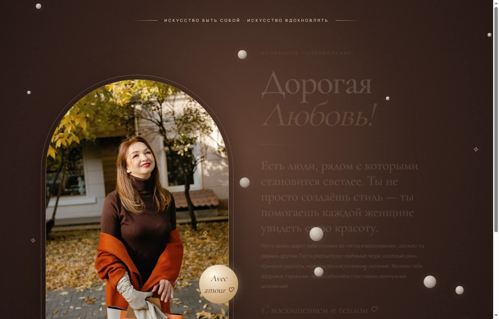
Открытки Музыкальный мини-сайтМузыкальные поздравления и открытки
Эмоциональные музыкальные мини-сайты и открытки как отдельное направление digital-продуктов и лид-магнитов, а не только B2B-решений.
Разные задачи — разные форматы. Важна не технология сама по себе, а то, какую работу она выполняет.
Обсудить свой проект03 / ПОДХОД К РАБОТЕ
Спокойный и понятный процесс: вы видите, что создаётся, зачем это нужно и какой этап будет следующим.
Обсуждаем задачу, аудиторию и желаемый результат. Находим главное — без лишней технической сложности.
Определяем структуру, сценарии взаимодействия и визуальное направление. Согласовываем понятный прототип.
Собираем интерфейс, подключаем необходимые функции, проверяем удобство на компьютере и смартфоне.
После запуска продукт можно улучшать: смотреть обратную связь, добавлять функции и автоматизировать процессы.
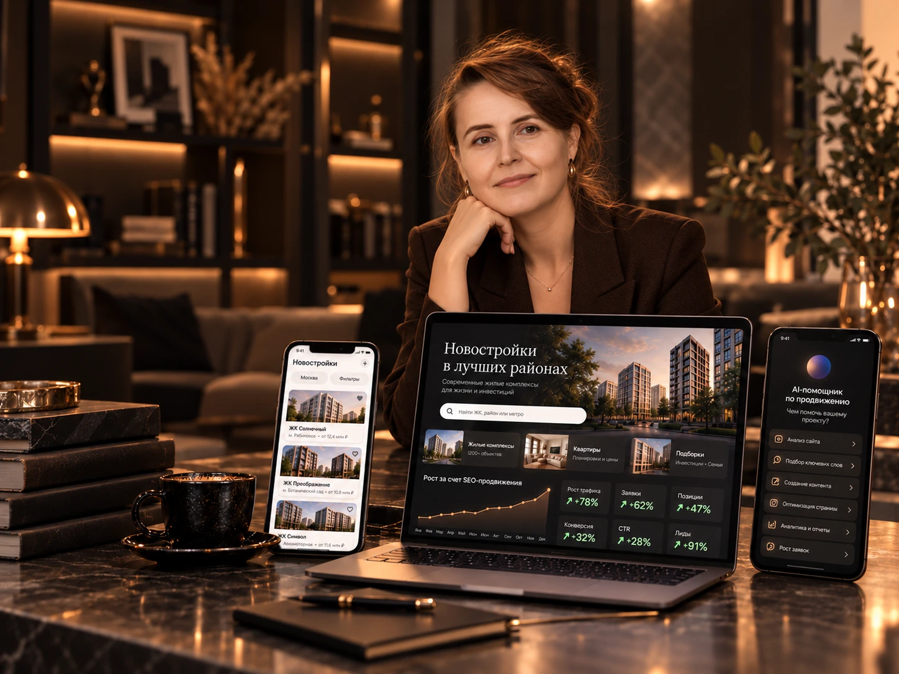
04 / ЗНАКОМСТВО
Я Светлана Щукина. Создаю сайты, приложения, интерактивные продукты и ИИ-инструменты, которые помогают упаковать идею, выстроить понятный цифровой опыт и упростить рабочие процессы.
Мне важно, чтобы проект был не просто красивым, а понятным, живым и полезным для бизнеса. Поэтому я соединяю логику, содержание, визуал и технологию так, чтобы продукт решал задачу, а не существовал сам по себе.
05 / НАЧНЁМ РАЗГОВОР
Расскажите, какую задачу нужно решить. Начнём с короткого обсуждения — без сложного технического задания.
ВЫБЕРИТЕ УДОБНЫЙ СПОСОБ СВЯЗИ
Написать в Telegram↗Написать ВКонтакте↗Для начала достаточно рассказать о задаче в нескольких предложениях.